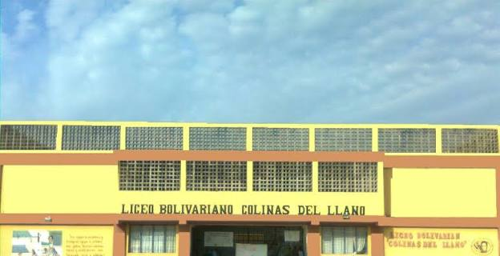
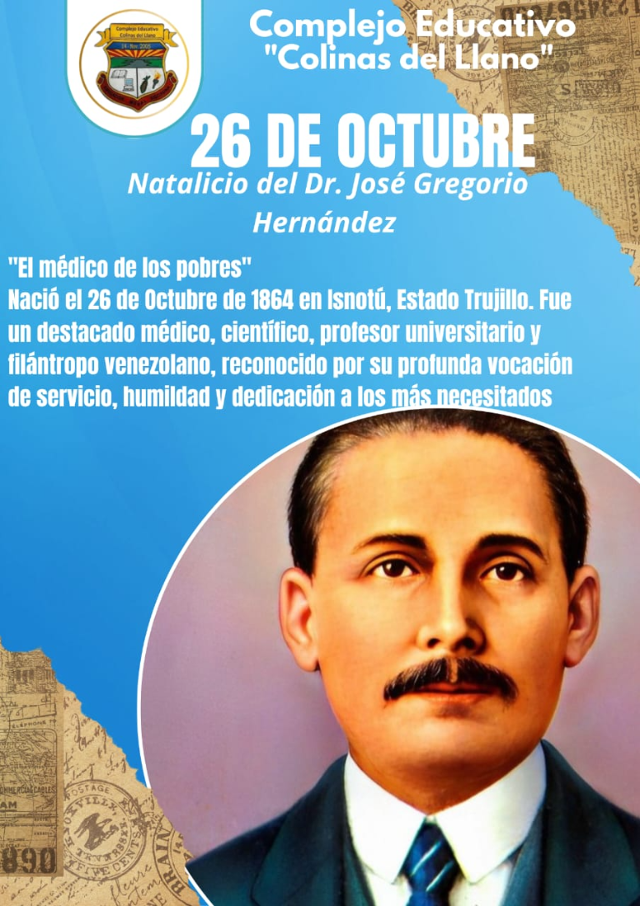
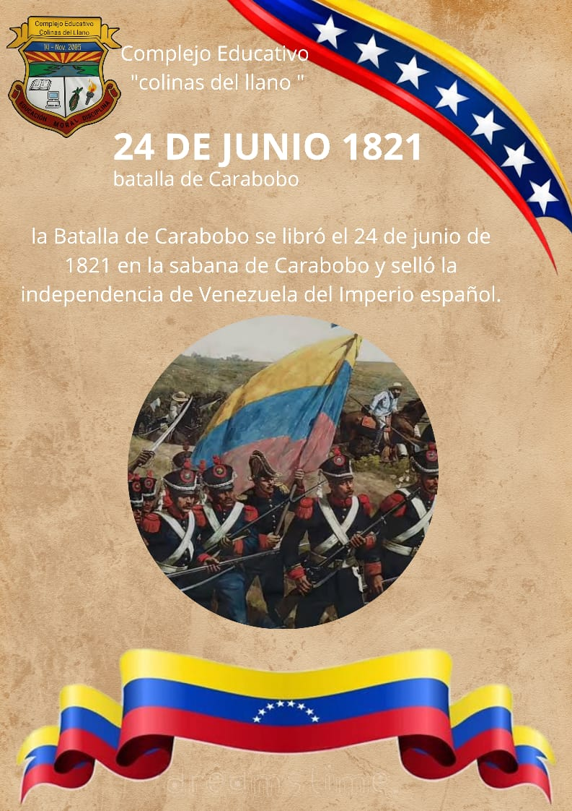
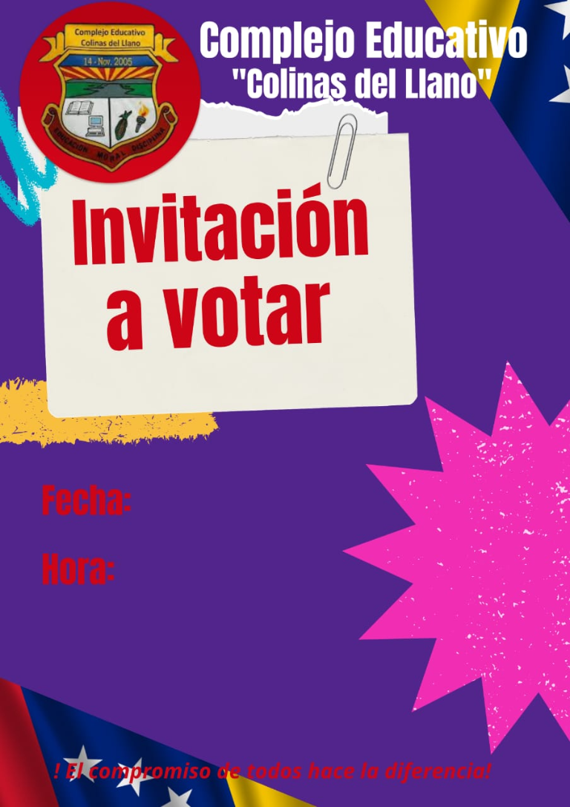
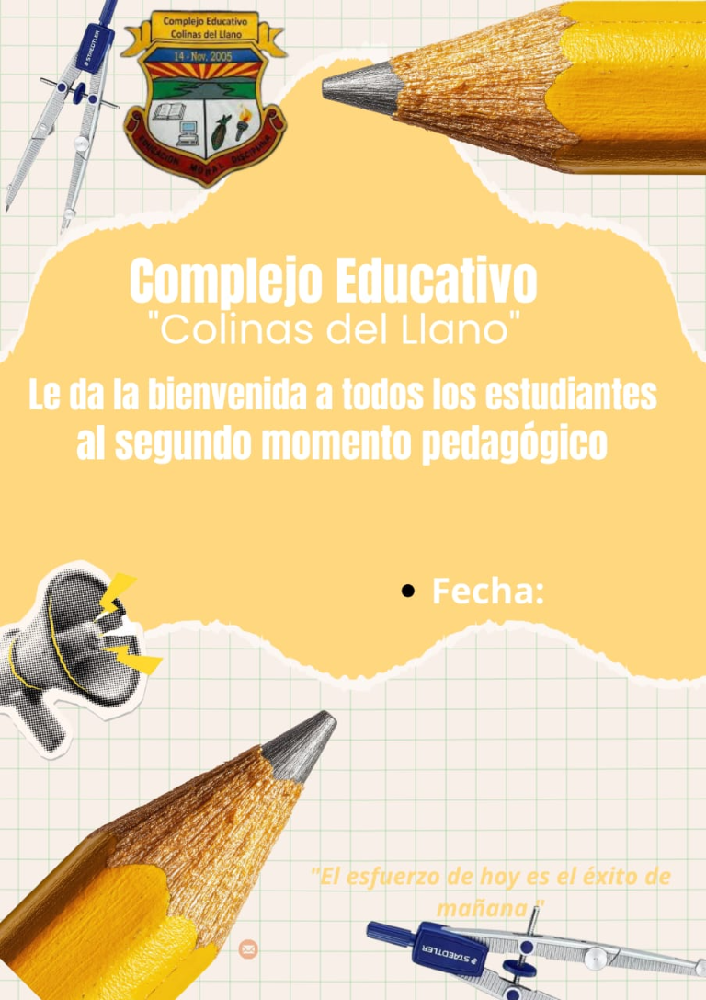
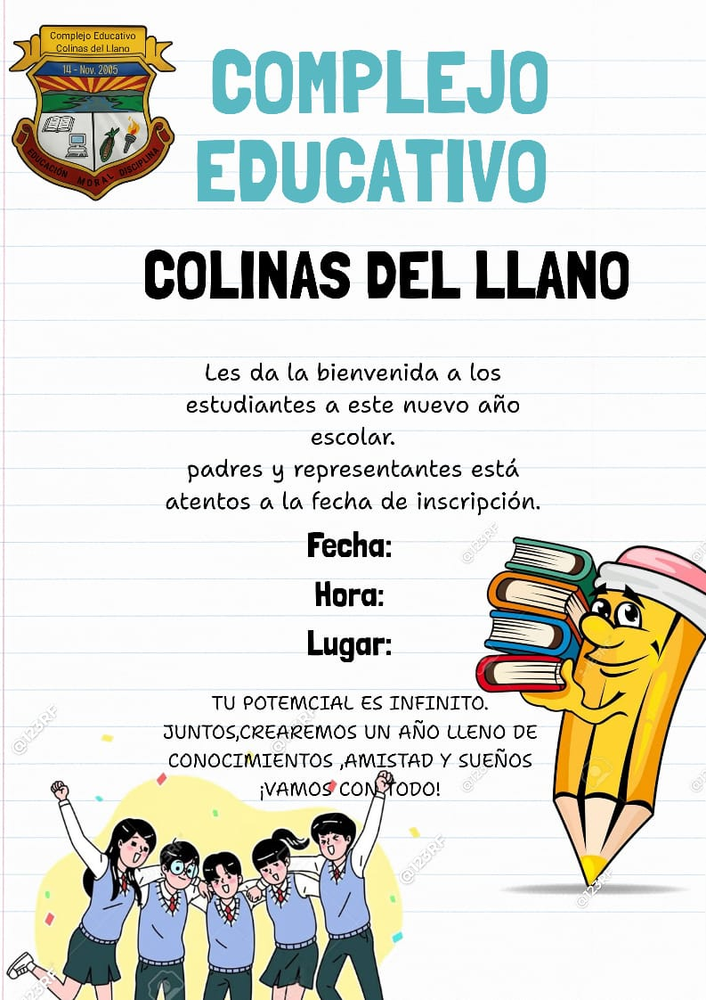
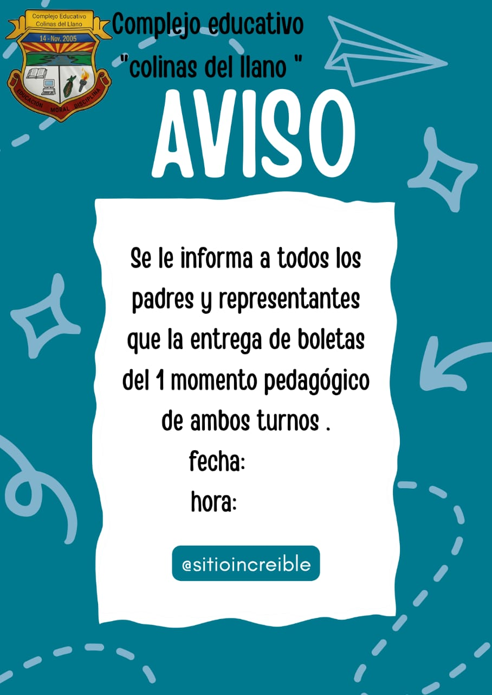
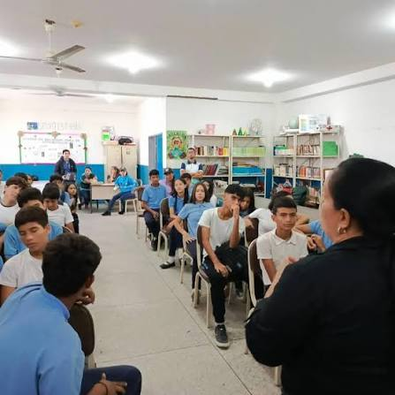
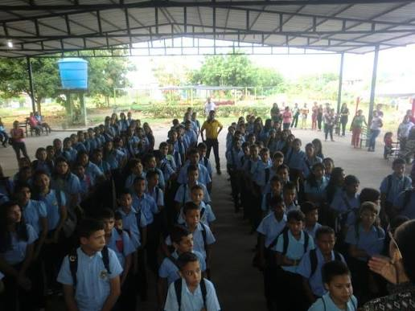

Educación Media General de 1.º a 5.º año en Ciudad Varyná, Alto Barinas, municipio Barinas, estado Barinas. Un liceo que aprende junto a su comunidad.

Somos un liceo público de Educación Media General que forma jóvenes de 1.º a 5.º año, con proyectos comunitarios y una comunidad educativa activa.
El proyecto educativo bolivariano comenzó en abril del año escolar 2003-2004, en la Escuela Bolivariana Ciudad Varyná, para atender a la comunidad que nacía con la urbanización.
En el año escolar 2004-2005 se abrieron dos secciones de primer año con 33 estudiantes cada una. Ese grupo de 66 escolares le dio su nombre al liceo: Colinas del Llano.
El 14 de noviembre de 2005 el liceo abrió sus puertas de manera formal, con 458 estudiantes, 27 docentes, 16 obreros y 6 secretarias.
Vocería estudiantil: representación de derechos, actividades culturales y deportivas, y proyectos liderados por el estudiantado.
En Explora el portal encontrarás accesos desplegables a horarios, directiva, efemérides y más información.
Planificación de contenidos y coordinación de planes de estudio de 1.º a 5.º año.
Registro de notas, boletines y certificaciones de estudio.
Acompañamiento psicopedagógico y relación con representantes.
Seguimiento de las promociones salientes y trámites para la universidad.
Este espacio queda preparado para agregar los horarios oficiales por año y sección.
Fechas importantes de la institución y del calendario patrio.


Pulsa cada sección para desplegar su contenido.
Vocería estudiantil, actividades culturales y deportivas, y proyectos liderados por el estudiantado.
Ver sección de estudiantesConsulta información de Subdirección Académica, Control de Estudios, Orientación y Coordinación de 5.º año.
Ver directiva y departamentosConoce la historia, la comunidad educativa y la misión del liceo.
Ver nuestra historiaEspacio reservado para publicar fechas importantes de la institución y del calendario escolar.
Ver efeméridesActividades, proyectos y comunicados de la comunidad educativa, con enlace a la fuente institucional cuando esté disponible.
Ver anuncios y proyectosExplora imágenes del plantel y encuentra nuestros datos de contacto.
Ver galería · ContáctanosEstudiantes de 4.º año compartieron una jornada con personas mayores.
Consultar fuente institucional ↗ 25 de febrero de 2026Trabajo comunitario para dar color a las paredes del plantel.
Consultar fuente institucional ↗





Correo: liceocolinas@gmail.com
Instagram: @ce_colinas
Buscar en Facebook
Buscar en TikTok
Urbanización Ciudad Varyná, sectores III y IV Araguaney, parroquia Alto Barinas.
Cómo llegarConsulta con Control de Estudios y Evaluación. [Completar con el procedimiento real]
Se gestionan en Control de Estudios y Evaluación. [Completar]
Escribe al correo del liceo indicando el motivo. [Completar]
Escríbenos por correo o redes oficiales con tu idea.
El acceso inicial solicita únicamente nombre y sección para esta visita. Esta página no guarda esos datos en una base de datos. Para contactar al liceo, puedes usar los enlaces de correo y redes publicados en esta página.